| What | Before | Now |
|---|---|---|
| Road switch carried over | "All shops" stayed on for the NEXT salesman pressed | each new press opens on Today |
| Only the owner out | camera dived to street level on him - 4 of 32 shops in view | keeps all 32 shops in view |
| Two salesmen on one shop | they overlapped by 12 px | side by side, the seller nearest the chest |
| Brush on + press a salesman | screen showed Budi, the brush painted for Ari | the brush follows the pressed man; tap him again = brush off |
| Phone: tap the bubble he sells in | he was thrown onto the chest's sign (2 spider lines) | zooms in to the selling scene; a pile of shops still spreads out |
| Pressed salesman: other men's lines | stayed bright, pointing at hidden shops | fade with the other men |
| "Today's round" rule | a shop with no visit frequency: Journey Plan said due, Expedition said not | same rule as Journey Plan (no frequency = every day) |
| Sale at a shop not on today's route | his road bent at empty ground - 4 stops, 0 chests | its chest shows when he is pressed |
| No round today: next shop | suggested the shop he was already selling in | never a shop he sold at today |
| PASS | PC page: every shop counted (chests + bubble counts = 32) |
| PASS | PC owner row = name + title |
| PASS | PC panel header counts 5 out (4 men + owner; Cahyo seen yesterday) |
| PASS | PC zoomed out: men stand on bubbles as a crowd, none loose, 5 figures |
| PASS | PC zoomed out: every shop counted |
| PASS | PC zoomed in (fullscreen, z16): at least 2 men in view, no man on a chest, no man on a man |
| PASS | EOD approved: Rini off the map, her row says Day closed |
| PASS | EOD sent, not approved: Rini still on the map |
| PASS | Press Budi: only his shops on the map (chests + bubbles = 8, his round) |
| PASS | Press Budi: road + arrows from him through his stops (9 points, 8 arrows) |
| PASS | Press Budi: switch shows Today pressed |
| PASS | Press Budi: the other men's march lines and target rings fade (one at full strength: his) |
| PASS | Press Budi, zooming in: his tags read BS · 1..8, no gap, no extra |
| PASS | Budi All shops: tags 1..8, 7 arrows (the road starts at stop 1, not at him) |
| PASS | Tap Budi again: everything back (32 shops, no road, no tags, no fade) |
| PASS | Press Ari next: opens on Today (switch does not carry over) |
| PASS | Pen Budi: others fade, nothing hidden (32 shops), tags on his |
| PASS | Pen Budi: a painted shop changes owner (its ring turns his colour) |
| PASS | Pen Budi + All shops: the painted shop wears his tag (one more than before) |
| PASS | Free: red flag on bubbles holding a nobody-shop (zoomed out) |
| PASS | Free, zoomed in: a red flag on every nobody-shop chest (grey ring) and on no other |
| PASS | Fullscreen PC: whole team (6) under the keys, Cahyo dimmed |
| PASS | Fullscreen PC: a mini row press = only his shops + road |
| PASS | Seller (Budi at Toko Sinar Abadi): holds the coin over his head, tag above it, not on the chest |
| PASS | Selling moment: 4 frozen frames, each on one live element (0 / 600 / 1050 / 1500 ms) |
| PASS | Selling moment ends: back to the still held coin, no moment running |
| PASS | Lite: 0 animations running on the map |
| PASS | Break · nobody out: no man on the map, panel 0 out, fullscreen lists all 5 dimmed, shops still 32 |
| PASS | Break · only the owner out: the camera keeps the shops in view (32), no dive to zoom 16 on him |
| PASS | Break · no round today, 3 sales off-schedule: every stop on Ari's road has a chest on the map |
| PASS | Break · no pin: map loads, no crash (pinless shops drawn at the sanitizer's default spot) |
| PASS | Break · no pin: Budi's road skips the two pinless stops (him + 6 pinned = 6 arrows) |
| PASS | Break · a pile of shops alone (the 2 pinless shops on one spot, no man) still spiderfies when tapped |
| PASS | Break · two men on one spot: side by side, never on each other or on a chest |
| PASS | Break · press Budi while the Ari pen is on: the pen moves to Budi, so the tags on screen are the man the brush paints for |
| PASS | Break · Ari pen picked while Budi is pressed: Ari's tags on screen (the camera goes back to the team) |
| PASS | Break · tap him again: let go, pen off, 32 shops, no tags |
| PASS | Break · another day picked, Budi pressed: no road through shops that are not on the map |
| PASS | Break · exit fullscreen with Budi pressed: map back to 500 px, still only his shops, his row pressed, switch shown |
| PASS | Phone: touch media live ((hover: none) true) |
| PASS | Phone page: 160 px strip framing the picked man, his card under it, no sideways scroll |
| PASS | Phone zoomed out: crowds, 5 figures, none loose |
| PASS | Phone fullscreen: 6 chips (Cahyo dim) + one line, clear of the zoom keys and the dock |
| PASS | Phone fullscreen: chip press = only Budi's shops + road + Today/All |
| PASS | Phone: the Today/All switch clears the dock and the zoom keys, buttons >= 32 px tall |
| PASS | Phone: tapping the bubble Budi sells in zooms in, never spiderfies him (no legs, no man on a chest, no bubble left) |
| PASS | Phone zoomed in with Budi pressed: tags BS · 1..8 |
| PASS | Phone: tap the chip again = everything back (no road, no tags, the others' chests back) |
| PASS | 0 console errors / exceptions over the whole run |
| A shop with no pin | drawn at Muntilan centre (the app's old default). The road skips it. Left as is: it is how the boss finds pinless shops to set their pin. |
| Phone, zoomed out | a crowd on one bubble can touch the next bubble's bar. Bubble spacing is the cluster's; changing it changes the whole look and the speed. |
| Real app | not checked: npm run dev was not running, so every check ran on the production lab build. |
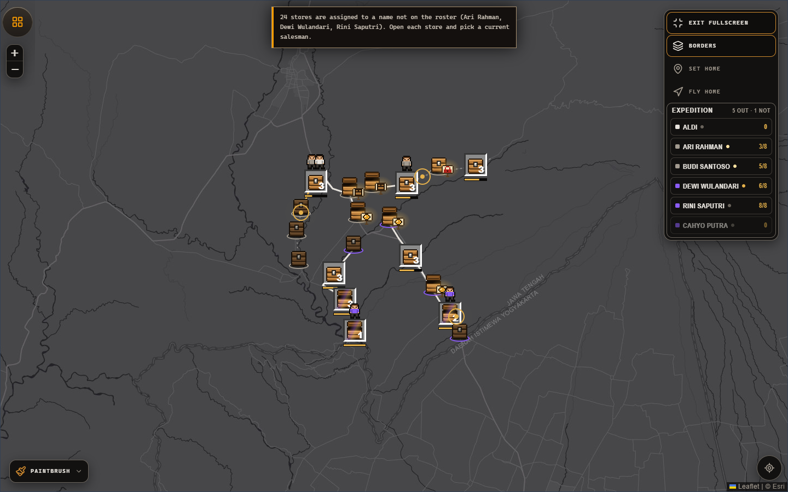
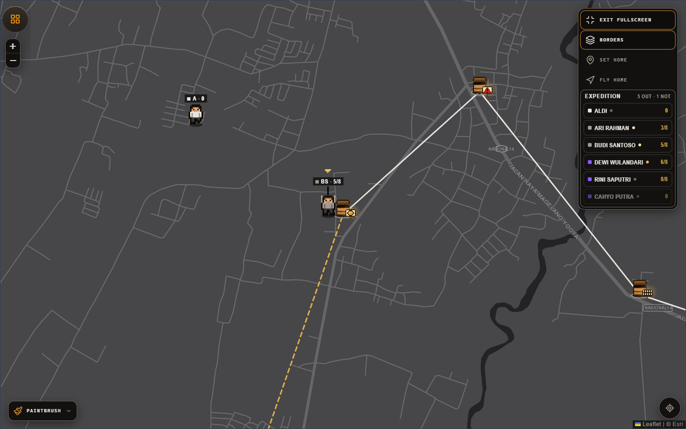
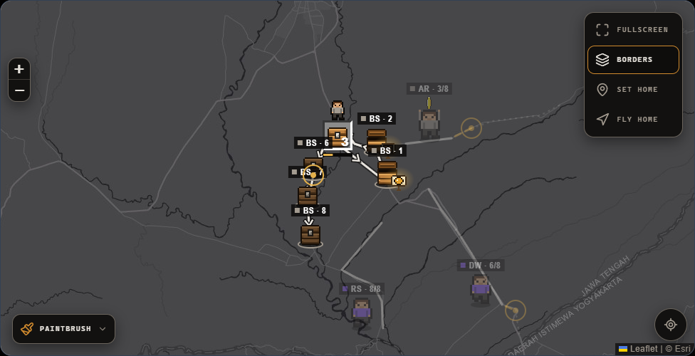
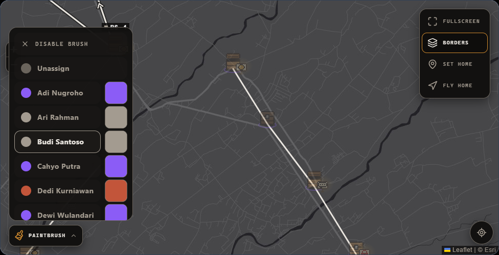
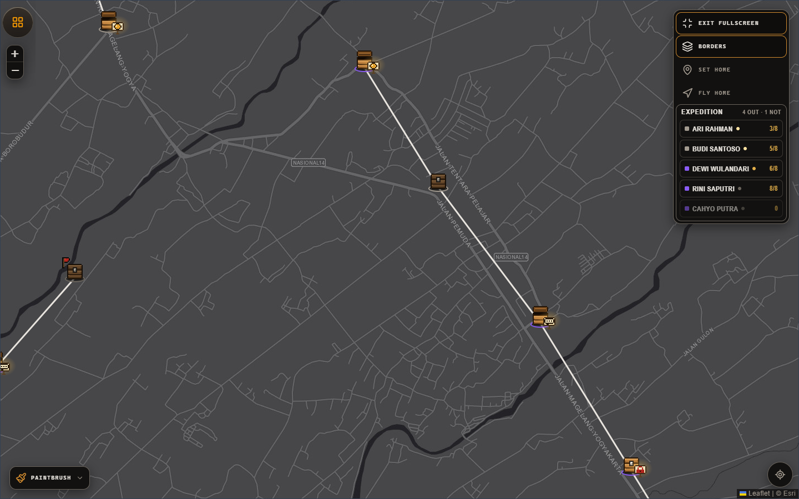
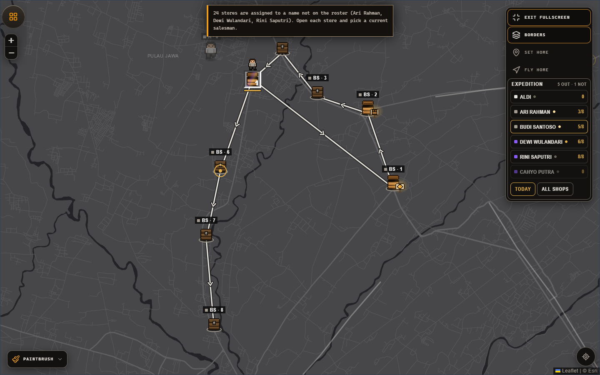
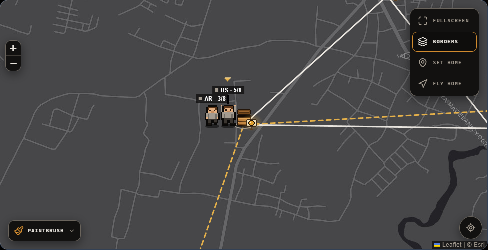
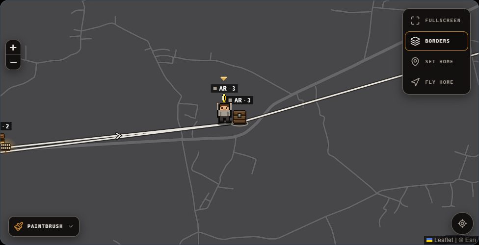
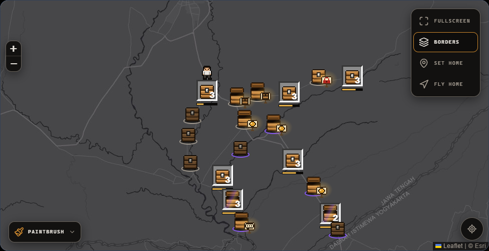
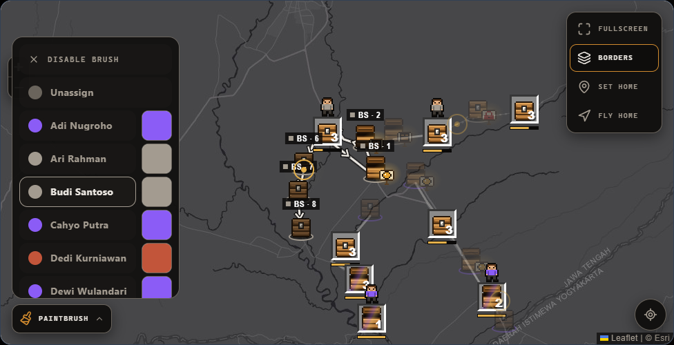
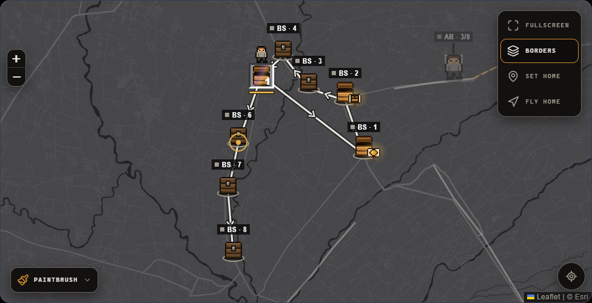
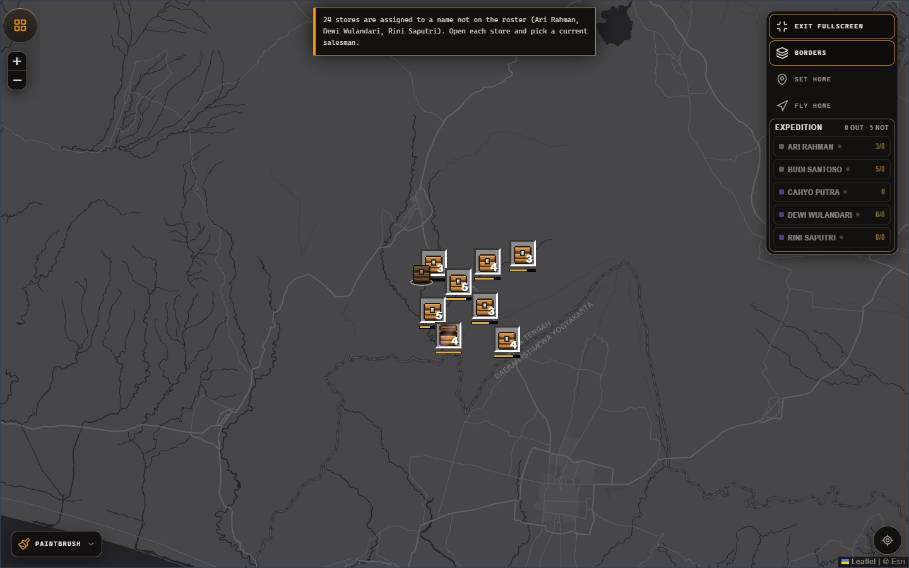
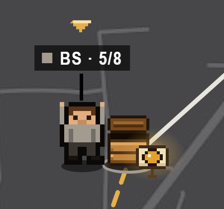
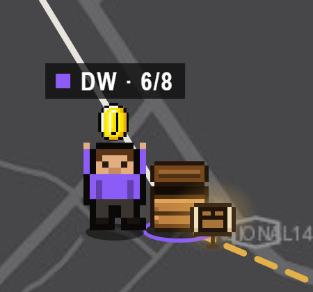
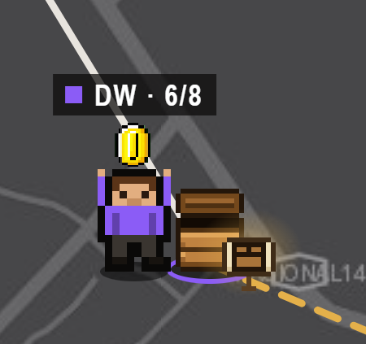
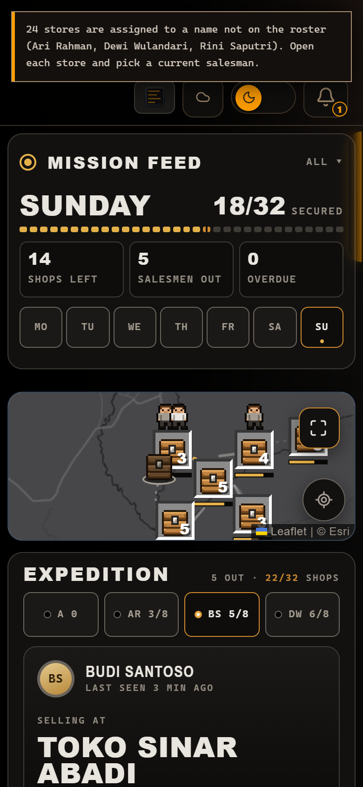
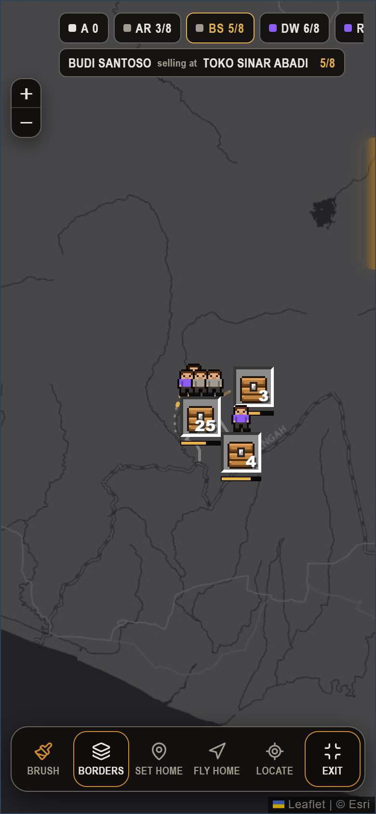
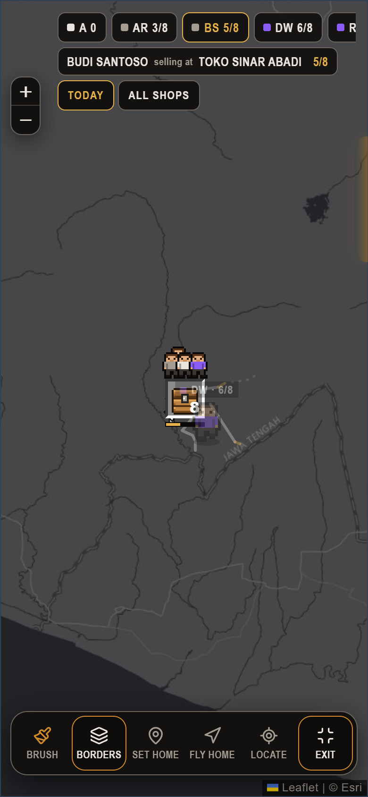
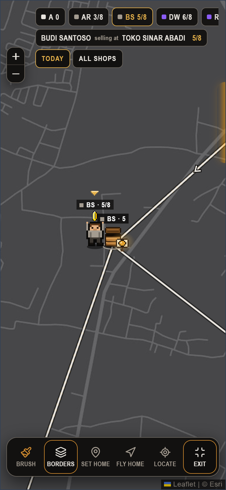